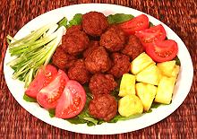

|
Pork MeatballsThailand - Mu Pan Kon Thot | ||||
| Serves: Effort: Sched: DoAhead: |
4 app ** 45 min Yes |
A delicious appetizer for any occasion, with seasonings more interesting than those of the famous Swedish Meatballs, more in tune with the Pacific Rim tastes of California. See Serving below. | |||
|
1 2 4 1 1/2 1 2 ar ---- |
# t cl t t T T --- |
Pork, ground Cilantro Root (1) Garlic Salt Pepper Fish Sauce Water Oil for frying -- Garnishes Tomato wedges Scallions Pineapple |
Prep - (25 min)
|